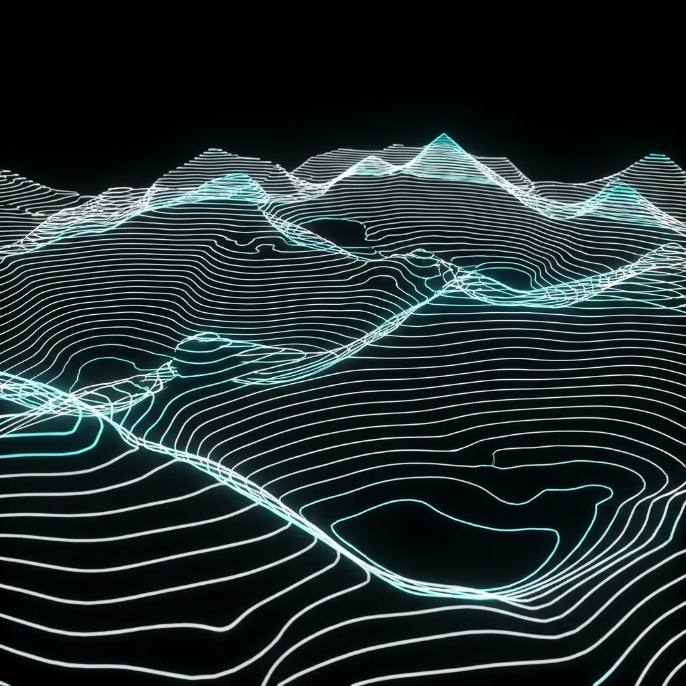
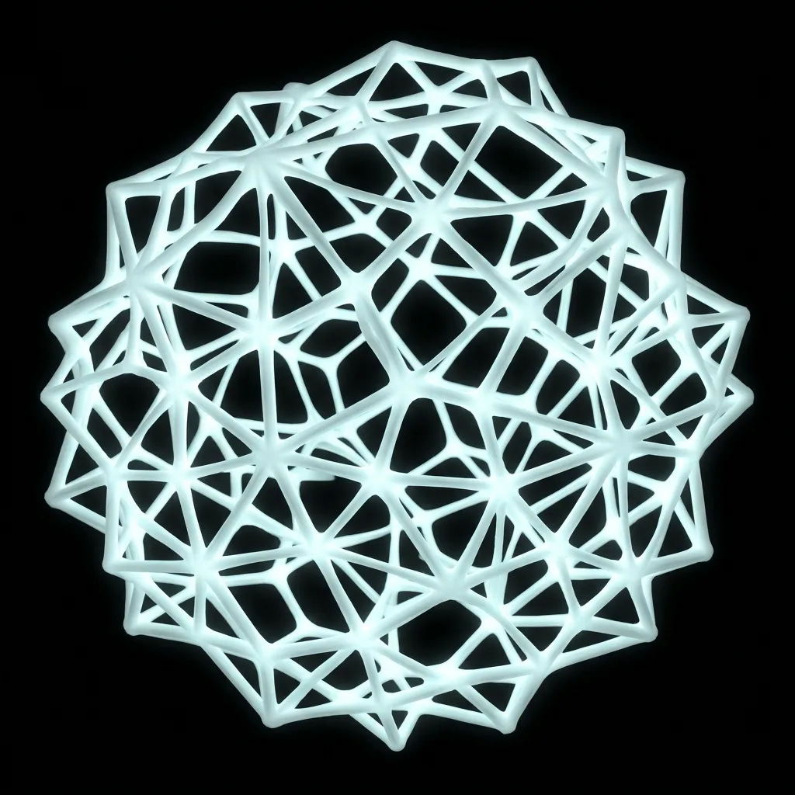

即時生成
以參數化與雜訊演算法驅動畫面，每位觀者看到的都是獨一無二、不會重複的瞬間，而非預先錄製的動畫。
01 — 理念
我們相信數位介面不該只是靜止的版面，而是一座持續生長、回應觀者的場域。每一次滑動、每一次停留，都是與作品共同完成的一次運算。
以參數化與雜訊演算法驅動畫面，每位觀者看到的都是獨一無二、不會重複的瞬間，而非預先錄製的動畫。
從光、密度到節奏，我們以視覺語彙鋪陳情緒曲線，讓品牌訊息在沉浸的氛圍中自然被記住。
Three.js、GLSL 著色器與即時資料串流是我們的基礎建設，效能與美學在每一幀裡同時被照顧。
02 — 作品
從互動官網到數位展演現場，以下是無垠近期以生成手法完成的數位場域。

將氣候時序資料映射為連綿起伏的等高線地形，觀者拖曳即可在時間軸上漫遊一整年的變化。
為當代水墨特展打造的即時流體裝置，觀眾的動作化為墨色筆觸，在巨幕上彼此暈染、消散。

以 Voronoi 演算法生成的品牌動態識別系統，讓標誌依場景自由生長，卻始終維持一致的視覺語法。
03 — 服務
以 Three.js 與 WebGL 打造會回應觀者的品牌官網與產品體驗，兼顧敘事張力與載入效能。
為展覽、快閃與品牌空間設計即時生成的視覺裝置，串接感測器與現場資料，創造獨一無二的現場。
從概念、視覺到現場技術整合，提供大型投影、舞台視覺與即時運算的完整數位展演製作。
以參數化系統打造能持續生長的品牌動態識別，讓標誌、字體與色彩在不同載體間保持一致。
04 — 聯絡
無論是一場展演、一個品牌官網，或一件尚未命名的實驗，歡迎把你的想像帶來。